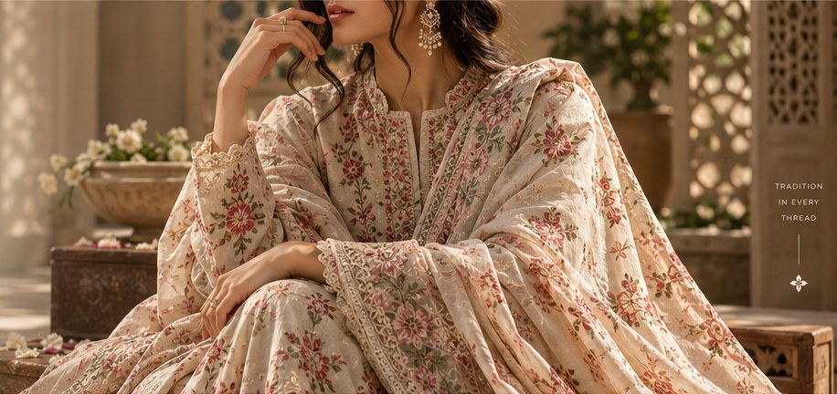
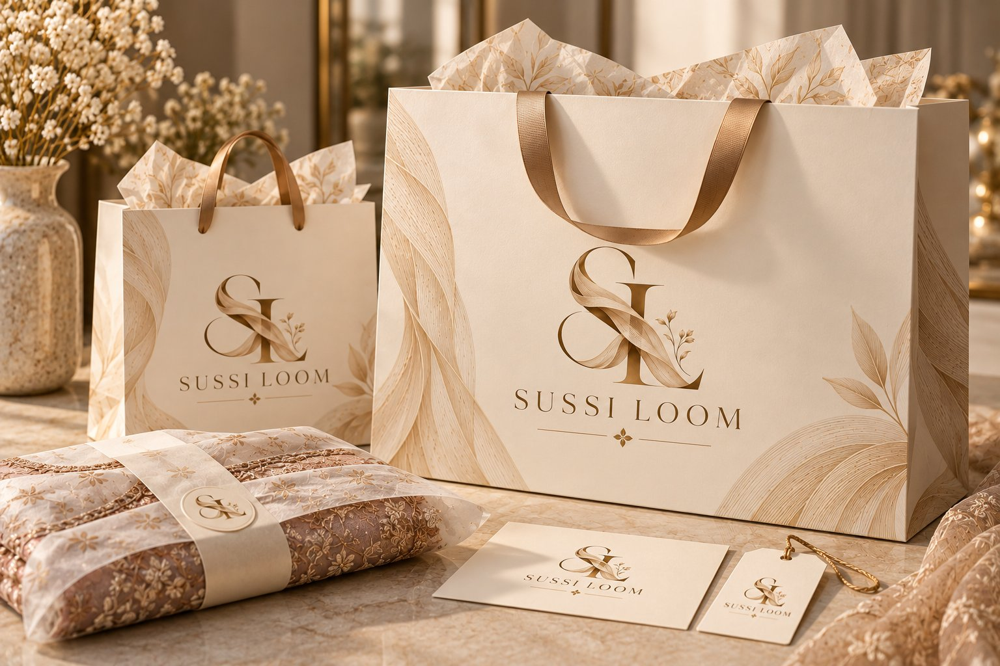

Every stripe
is a thread.
Sussi is the striped handloom cloth of Sindh and southern Punjab: cotton warp, silk-sheen weft, a few metres a day per loom. Our first 24 weaves are coming off looms in Hala, Nasarpur, Multan and Bahawalpur now.

The cloth your nani remembers.
“Sussi is a handwoven cloth of fine, coloured stripes, once woven in every weaving town along the Indus, now made by only a handful of families.”
Traditionally a cotton warp with a silk or silk-sheen weft, sussi was the cloth of shalwars, ghagras and wedding trunks across Sindh and southern Punjab. It is soft, breathable, holds colour for decades and gets better with every wash. Power looms and printed lawn nearly made it disappear.
How a sussi is made
A three-piece suit is roughly 7.5 metres. At a few metres a day on a pit loom, that is most of a working week.
Dyeing
Yarn is dyed in batches of a few kilos and hung on rooftops to dry. Batches never match exactly, which is why two runs of the same weave can differ by a shade.
Warping
Over a thousand warp threads are counted onto the beam in stripe order. Get one wrong and the mistake runs the full length of the cloth, so this step is done slowly, often by two people.
Weaving
The weaver sits in the pit, works the treadles with their feet, throws the shuttle and pulls the beater in. Our festive weaves are beaten tighter (about 60 picks an inch), which is why they take longer.
Finishing
Every length is washed once to set the dye, checked against light for broken ends, then folded and tagged with the town and loom it came from at our Karachi studio.
One cloth,
six ways in.
Suit lengths to have tailored, cut pieces for women and men, shawls for winter, and chaarkhana for the house.
See all 24Unstitched
Explore →Ready to Wear
Explore →Men
Explore →Dupattas & Shawls
Explore →Festive
Explore →Home
Explore →On the looms now
Sussi isn't printed lawn.
It's the opposite.
Printed lawn
- Pattern is printed on top of the cloth and fades
- Made in thousands of metres on power looms
- Thins and pills after a few seasons
- Same design in every shop in the city
Sussi
- Every stripe is a dyed thread, so the colour goes all the way through
- Woven by hand, a few metres a day
- Gets softer with each wash, lasts for years
- Runs of 20–40 lengths per weave, so you will rarely meet someone wearing yours
Born along the river.
Sussi grew up in the weaving towns of the Indus valley. Each place had its own colour habits, and some still do.
- HalaMadder red and indigo, with the black–turmeric–black trio. Also our chaarkhana for home. 9 weaves
- NasarpurFiner, lighter cotton sussi: cobalt, slate, pearl. Good for everyday. 7 weaves
- MultanDenser, silk-heavy cloth for festive wear, and our double-weft shawls. 4 weaves
- BahawalpurDesert colours: saffron, black-and-gold, pomegranate. 4 weaves

Folded, tagged,
signed for.
- The cloth, folded in tissue printed with our stripe
- A card tag: weave name, town, loom days, thread colours
- Care notes for the first wash (it will bleed a little, once)
- A handwritten note from whoever packed it
Three ways to wear sussi
Bahawal Baagh as a shalwar under a plain white kurta. The oldest way to wear sussi, and still the one people stop you about.
Thar Dhoop kurta, straight jeans, kolhapuris. Or the Haleji stole knotted over a black tee. Sussi doesn't need a shalwar.
Rohi Raat with antique-gold jewellery and nothing else patterned. For men, the Kotri waistcoat over an ivory kurta.
Before you order
Is it really handwoven?
Yes. Every metre we sell is woven on a hand-operated loom by weaving families we work with directly. Small irregularities in the stripes are the mark of the hand, not a defect.
How do I wash sussi?
Hand wash or gentle machine wash in cold water, dry in the shade, and iron on medium. The first wash may release a little dye, so wash it alone once. It softens beautifully after that.
When do you launch, and what will it cost?
The first collection is still coming off the looms. Prices will be announced on launch day. People on the WhatsApp list see them first, and get first pick of the limited weaves.
What does "Save for launch" do?
It keeps a list of the weaves you like in this browser. From your wishlist you can send it to us on WhatsApp, and we'll message you when those exact pieces go live.
Why are the runs so small?
A weave is decided at warping: once a loom is set up, it makes one stripe order until the beam runs out, usually 20 to 40 suit lengths. When it's gone, the next run may be a different colourway.
Will you deliver across Pakistan?
Yes. Karachi in 2–3 working days, other cities 3–5. Cash on delivery will be available from launch.
Hear when the looms finish.
Leave your WhatsApp number. You'll get one message on launch day with prices, and first pick of the limited weaves. Nothing else.